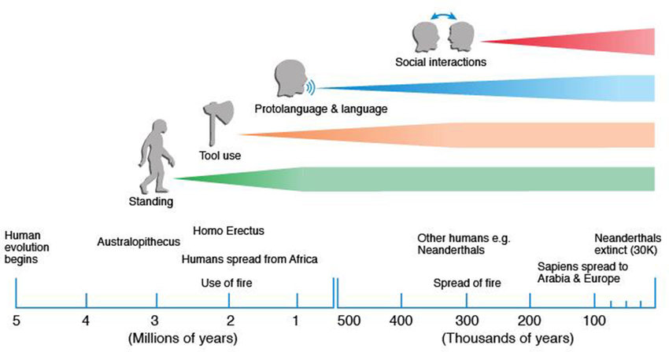
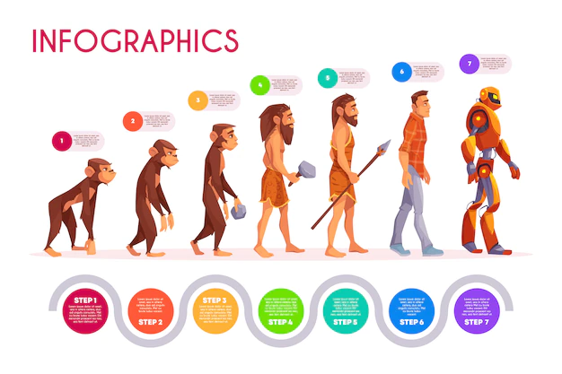

Knowledge
In Ethiopia . Among those fossils was Australopithecus afarensis. In 1974, paleoanthropologists found an almost complete skeleton of one specimen of this species and named it Lucy, from The Beatles song “Lucy in the Sky with Diamonds.” The whole world found out about Lucy and she was in every newspaper: she became a global celebrity. This small female—only about 1.1 m tall lived 3.2 million years ago. Analysis of her femurs showed that she used terrestrial locomotion. Lucy could have used arboreal and bipedal locomotion as well, as foot bones of another A. afarensis individual had a curve similar to that found in the feet of modern humans. Authors of this finding suggested accordingly that A. afarensis was exclusively bipedal and could have been a hunter-gatherer.
Homo is the genus that includes modern humans, like us, and our most closely related extinct ancestors. Organisms that belong to the same species produce viable offspring. The famous paleoanthropologist named Louis Leakey, along with his team, discovered Homo habilis in 1964. Homo habilis was the most ancient species of Homo ever found. Homo habilis appeared in Tanzania over 2.8 million years ago, and 1.5 million years ago became exinct. They were estimated to be about 1.40 meter tall and were terrestrial. They were different from Australopithecus because of the form of the skull. The shape was not piriform, but spheroid, like the head of a modern human. Homo habilis made stone tools, a sign of creativity.
In Asia, in 1891, Eugene Dubois discovered the first fossil of Homo erectus, which appeared 1.8 million years ago. This fossil received several names. The best known are Pithecanthropus and Sinanthropus. Homo erectus appeared in East Africa and migrated to Asia, where they carved refined tools from stone. Dubois also brought some shells of the time of H erectus from Java to Europe. Contemporary scientists studied these shells and found engravings that dated from 430,000 and 540,000 years ago. They concluded that Homo erectus individuals were able to express themselves using symbols.
Several Homo species emerged following Homo erectus and quite a few coexisted for some time. The best known one is Homo neanderthalensis, usually called Neanderthals and they were known as the European branch originating from two lineages that diverged around 400,000 years ago, with the second branch Homo sapiens known as the African branch. The first Neanderthal fossil, dated from around 430,000 years ago, was found in La Sima de los Huesos in Spain and is considered to originate from the common ancestor called Homo heidelbergensis. Neanderthals used many of the natural resources in their environment: animals, plants, and minerals. Homo neanderthalensis hunted terrestrial and marine animals, requiring a variety of weapons. Tens of thousands of stone tools from Neanderthal sites are exhibited in many museums. Neanderthals created paintings in the La Pasiega cave in the South of Spain and decorated their bodies with jewels and colored paint. Graves were found, which meant they held burial ceremonies.

Denisovans are a recent addition to the human tree. In 2010, the first specimen was discovered in the Denisova cave in south-western Siberia. Very little information is known on their behavior. They deserve further studies due to their interactions with Neandertals and other Homo species.
Homo sapiens
Fossils recently discovered in Morocco have added to the intense debate on the spread of Homo sapiens after they originated 315,000 years ago. The location of these fossils could mean that Homo sapiens had visited the whole of Africa. In the same way, the scattering of fossils out of Africa indicated their migrations to various continents. While intensely debated, hypotheses focus on either a single dispersal or multiple dispersals out of the African continent. Nevertheless, even if the origin of the migration to Europe is still a matter of debate, it appears that H. sapiens was present in Israel 180,000 years ago. Therefore, it could be that migration to Europe was not directly from Africa but indirectly through a stay in Israel Asia. They arrived about 45,000 years ago into Europe where the Neanderthals were already present. Studies of ancient DNA show that Homo sapiens had babies with Neanderthals and Denisovans. Nowadays people living in Europe and Asia share between 1 and 4% of their DNA with either Neanderthals or Denisovans.
Several thousand years ago Homo sapiens already made art, for example the wall painting in the Chauvet cave and the Lascaux cave, both in France. The quality of the paintings shows great artistic ability and intellectual development. Homo sapiens continued to prospect the Earth. They crossed the Bering Land Bridge, connecting Siberia and Alaska and moved south 12,500 years ago, to what is now called Chile. Homo sapiens gradually colonized our entire planet.
Neolithic Period means New Stone Age, due to the new stone technology that was developed during that time. The Neolithic Period started at the end of the glacial period 11,700 years ago. There was a change in the way humans lived during the Neolithic Period. Ruins found in Mesopotamia tell us early humans lived in populated villages. Due to the start of agriculture, most wandering hunter-gatherers became sedentary farmers. Instead of hunting dogs familiar with hunter gatherers, farmers preferred sheepdogs. In the Neolithic age, humans were farming and herding, keeping goats and sheep. Aurochs, shown in the paintings from the Lascaux cave, are early ancestors of the domesticated cows we have today. The first produce which early humans began to grow in Mesopotamia was peas and wheat. Animals and crops were traded and written records were kept of these trades. ClayFine grained earth that can be molded when wet and that is dried and baked to make pottery. Tokens were the first money for these transactions. The Neolithic Period saw the creation of commerce, money, mathematics, and writing in Sumer, a region of Mesopotamia. The birth of writing started the period that we call “history,” in which events are written down and details of big events as well as daily life can easily be passed on. This tremendous change in human lifestyle can be called the Neolithic Revolutional change occurring relatively quickly in human society..
WRITINGS
Human EvolutionApes to humans
Padlet
Conclusion
From all the information collected by me I have came up to a conclusion that is the time of Homo erectus, Homo species migrated out of Africa. Homo sapiens extended this migration over the whole planet. In the fifteenth and sixteenth centuries, Europeans explored the world. On the various continents, explorers met unknown populations. The Europeans were wondering if those beings were humans or not. But actually, those populations were also descendants of the men and women who colonized the earth at the dawn of mankind. In much earlier times, there was a theory that there were several races of humans, based mostly on skin color, but this theory was not supported by science. Current studies of DNA show that more than seven billion people who live on earth today are not of different races. There is only one human species on earth today, named Homo sapiens. Humans might want stronger immune systems, stronger muscles, better vision and hearing, better brains, or even bodies that age more slowly. Any or all of these technological developments could replace natural selection as the major force in human evolution. The only realistic scenario for the evolution of two species out of ours would probably be if we expanded beyond our home planet and then lost contact with the settlers. If both populations survived long enough – much more than 100,000 years – we might see divergence and maybe two species of humans.